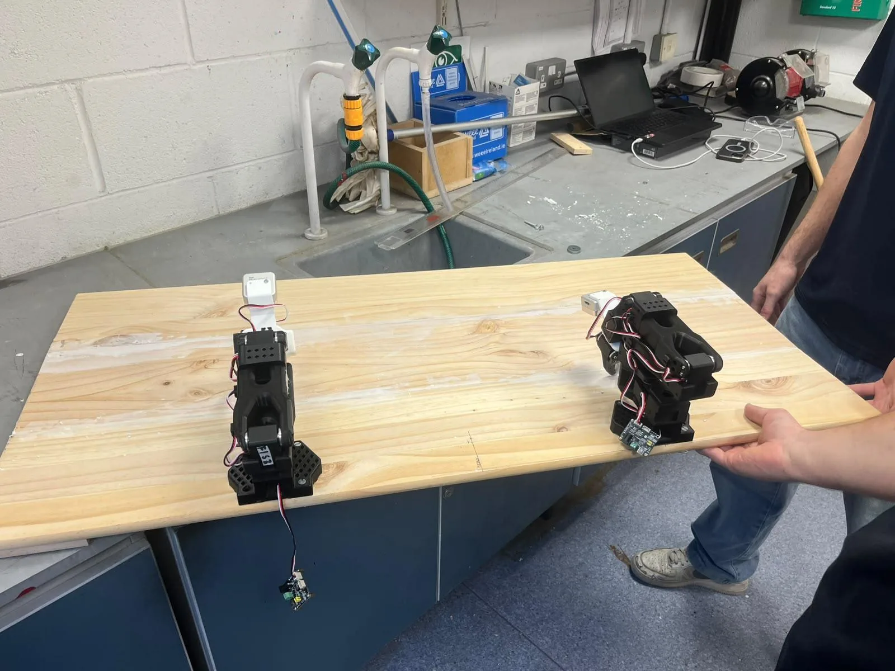
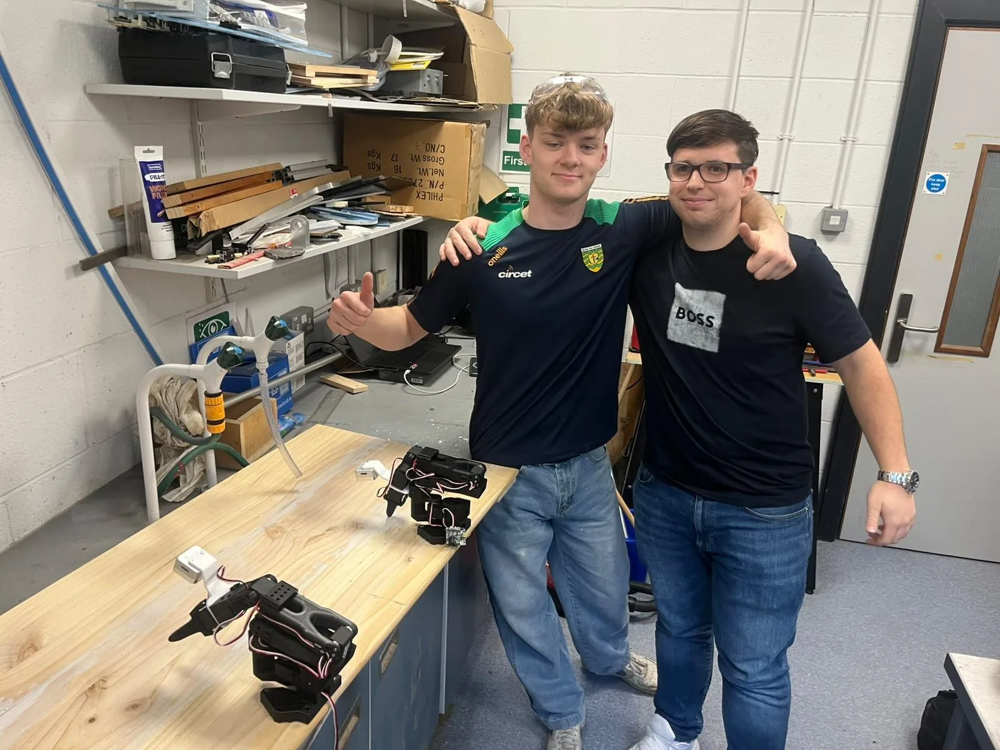
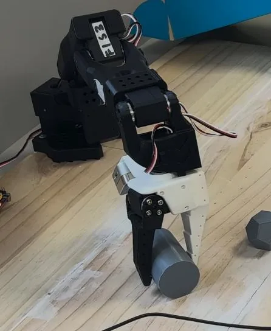
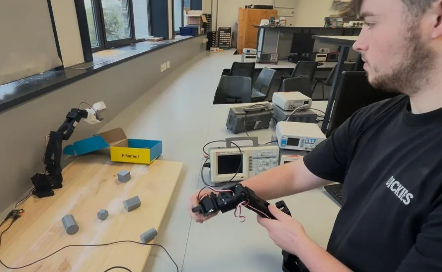
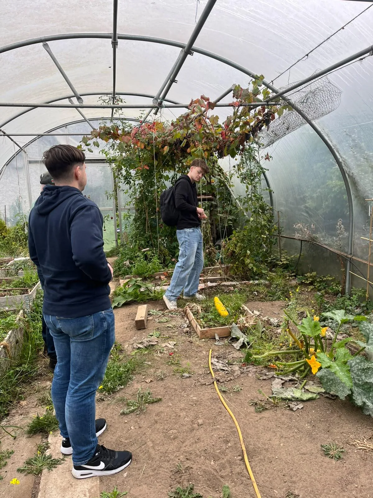

Training platform
We designed and built a wooden training board with the follower arms bolted down, so the setup stays rigid and repeatable between data-collection sessions and there is no re-calibration every time the arms are moved.
Robot Learning · Assistive Technology
A two-arm robot built from open-source SO-101 arms that learns everyday tasks from demonstration instead of being programmed for each one. The same SO-101 and LeRobot platform underpins my build for the IEEE Global Robotics Championship.

People with limited hand or arm function often rely on carers for small, repeated tasks such as pouring a drink or putting things away. Assistive robot arms that can do this already exist, but they typically cost tens of thousands of euros and need an engineer to program every new task.
Our approach is to pair affordable, open-source SO-101 arms with Hugging Face’s LeRobot software, so a new task can be taught by demonstrating it with a leader arm rather than writing code for every movement. Training and inference run on our own laptops, keeping the system cheap to build and easy for others to replicate.
We contacted nursing homes and Men’s Sheds Ireland, then visited Naas Men’s Shed to see how members work day to day and ask which jobs they find difficult. We showed photos and videos of the arms sorting objects, pouring and picking and placing, and toured the workshop, polytunnels and common rooms.
Two tasks came directly out of that visit:
Shed members have been invited to Maynooth to try the arms in person, and we plan to return to the shed with the next version to gather hands-on feedback.
We designed and built a wooden training board with the follower arms bolted down, so the setup stays rigid and repeatable between data-collection sessions and there is no re-calibration every time the arms are moved.
With the platform built, we teleoperated the follower arms from the leader arms to check range of movement and gripper strength, including picking up round objects with PLA+ printed grippers.
The first model is trained in LeRobot from human demonstrations recorded on the leader arms, with simulation data as a second source. Published work on low-cost bimanual arms using Action Chunking with Transformers (ACT), and compact vision-language-action models such as SmolVLA tested on SO-101 tasks, guides our choice of policies.
Pouring is tested with rice standing in for liquid and compared against human pours by counting spills; pick-and-place is scored on whether each object ends up in the right place. Feedback from the Men’s Shed and our facilitator feeds a second, improved model, which we compare against the first.
A signed risk assessment covers the workshop and moving arms; training uses cold water instead of tea, with electronics kept well clear of liquids. The project is mapped to UN Sustainable Development Goals 11, 12 and 16 through accessible, low-cost, open-source assistive technology.
I’m also using SO-101 arms and LeRobot for the Robot Arm AI Challenge at the IEEE Global Robotics Championship, where I’m representing IEEE UK & Ireland in a two-person team. The gripper and teleoperation tests on this page, including handling dodecahedron and hexagonal-prism pieces, feed directly into that competition build.



